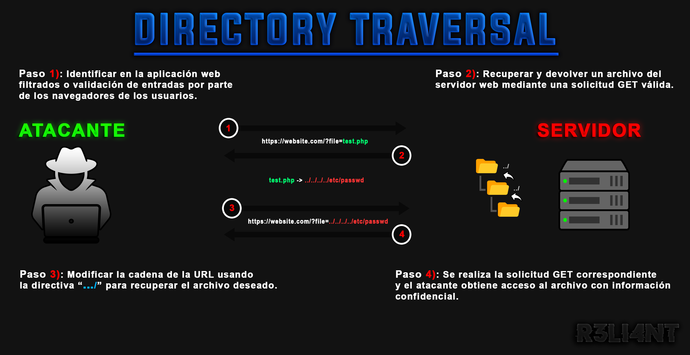

# VULNERABILIDAD de DIRECTORIO TRANSVERSAL
El recorrido de directorio (también conocido como cruce de rutas de archivos) es una vulnerabilidad de seguridad web que permite a un atacante leer archivos arbitrarios en el servidor que ejecuta una aplicación. Es una vulnerabilidad crítica que permite a un atacante apropiarse de archivos confidenciales del sistema operativo, incluir código y datos de la aplicación, escribir archivos arbitrarios que le permita modificar los datos de la aplicación y obtener control total del servidor.
Mediante la manipulación de variables que hacen referencia a archivos con secuencia "punto-punto-barra" (../) y sus variaciones, es posible acceder a archivos y directorios que se almacenan fuera de la carpeta raíz web, incluido el código fuente o la configuración de la aplicación. Cabe mencionar que el acceso a ciertos archivos está limitado por los privilegios de acceso del sistema operativo. Existe la posibilidad que un atacante pueda incluir un archivo o recurso remoto que usted no autorizó (scripts, temas, imágenes, recursos locales, etc).

Ejemplo de PATH TRAVERSAL:
Una vulnerabilidad de salto de directorios consiste en construir la ruta de descarga de un fichero mediante el campo input ingresado por el usuario. La falta de validación del input es la clave para poder ser explotada y adueñarse de información sensible nombrada anteriormente. Cuando la dirección URL de un subdirectorio de un sitio web se ve de la siguiente forma, posiblemente sea vulnerable a un path traversal:
$ https://website.com/?file=filename.phpVectores de ATAQUE:
Para acceder a ficheros o ejecutar comandos en cualquier parte del sistema un atacante hará uso de secuencias de caracteres especiales, comúnmente como se menciono antes "punto-punto-barra" (../). Esto permitiría que el atacante comprometa el sistema y pueda navegar por toda la estructura de directorios de este, ganando acceso a ficheros del sistema, código fuente, entre otras. Los ataques de directorio transversal suelen ir acompañados de otras vulnerabilidades como Local File Inclusion (LFI) y/o Remote File Inclusion (RFI).
Para identificar que parte de las aplicaciones son vulnerables, el atacante necesita comprobar todas las vías que acepten datos del usuario. Estas vías abarcan consultas GET, POST, HTTP y hasta formularios de subidas de ficheros. En el siguiente ejemplo se observa un código inseguro PHP, la secuencia de comandos pasa un valor de solicitud HTTP no desinfectado directamente a la función de PHP include(). El script intentará incluir cualquier ruta/nombre de archivo que se pase como parámetro.
$ $index = $_GET['index'];
include($index);Por ejemplo, si pasa /etc/passwd como argumento, este archivo es legible para todos los usuarios. Por lo tanto, el script devuelve el contenido del archivo con información sobre todos los usuarios del sistema:

- /etc/passwd: descargar el fichero
«passwd»con las contraseñas del sistema.
PAYLOADS - EXPLOTACIÓN
Para conseguir explotar esta vulnerabilidad con éxito, es preciso conocer la arquitectura del sistema operativo que alberga la aplicación web. El atacante necesita hacer filtros impuestos por el usuario para evitar la carga de ficheros restringido (evitar usar ../ o byte-nulo). La manipulación de variables permite eludir el filtrado de entrada mal implementado. Para ello podemos utilizar la codificación URL-Encode:
| URL | URL Doble | Unicódigo UTF-8 | Unicode de 16 bits | |
|---|---|---|---|---|
| . | %2e | %252e | %c0%2e %e0%40%ae %c0%ae | %u002e |
| / | %2f | %252f | %c0%2f %e0%80%af %c0%af | %u2215 |
| \ | %2c | %252c | %c0%5c %c0%80%5c | %u2216 |
| ../ | %2e%2e%2f | %252e%252e%252f | %c0%ae%c0%ae%c0%af | %uff0e%uff0e%u2215 |
| ..\ | %2e%2e%2c | %252e%252e%252c | %c0%ae%c0%ae%c0%af | %uff0e%uff0e%u2216 |
- %2e%2e%2f representa ->
../: moverse de manera ascendente entre los directorios.
Los ataques inteligentes son los que encuentran formas de eludir las restricciones para la entrada proporcionada por el usuario. Por ejemplo:
- ../../../etc/ se puede escribir ->
..%2f..%2f..%2fetc%2f.
# EJEMPLO DE EXPLOTACIÓN MANUAL | Metasploitable2
A continuación, mostraré como es posible identificar y aprovecharse de la vulnerabilidad Path Traversal. Cabe recalcar que estoy ejecutando un entorno controlable y vulnerable llamado Metasploitable2 para llevar a cabo el procedimiento. Con la dirección IP de la máquina podremos acceder al servicio web a través del navegador.

Si observamos detalladamente la URL, es posible retroceder por los directorios luego de la variable ?page=.

Con el parámetro de slash "/" + dos puntos ".." recorremos los directorios infinitamente, logrando así acceder a los archivos del servidor web.

Dentro de la máquina víctima he creado un fichero de texto llamado filename.txt y dentro escribí el mensaje "Hello, Friend", lo guarde en el directorio "/home/". Utilizaré nuevamente los caracteres especiales para recorrer entre los directorios y encontrar el fichero oculto.

Efectivamente, el fichero es legible y nos muestra el contenido.

Ahora probemos que pasaría si aumentamos el nivel de seguridad y volviéramos a intentarlo.

En la captura anterior se puede ver que ya no es posible acceder a los directorios, aquí es donde tendremos que hacer uso de los payloads codificados que se vieron anteriormente. Por ejemplo, el payload "%2e%2e%2f%2e%2e%2f%2e%2e%2f%2e%2e%2fetc%2fpasswd" equivale a "../../../../etc/passwd".

Con la herramienta de pentesting web Burp Suit podemos configurar un proxy y capturar la petición antes de ser enviada, posteriormente modificarla y reenviarla.

Con la opción de Encoder de Burp Suite podemos codificar el parámetro URL.

# Herramienta de Fuzzer transversal de directorio | DOTDOTPWN
DotDotPWN es un fuzzer inteligente automatizado que nos ayuda a encontrar vulnerabilidades de directorios transversales en servidores como HTTP/FTP/TFTP, hasta blogs y sistemas de administración de contenido. Según su descripción, tiene un módulo de complemento para enviar la carga útil (payload) deseada al host y puerto especificado.
Instalar en Debian:
$ sudo apt-get install dotdotpwn
La siguiente es la sintaxis básica del comando:
$ dotdotpwn -m <modulo> -h <host> <opciones_adicionales>Están son las posibles opciones y sus respectivos valores que puede agregar al final del comando:
-
-m: Selecciona un módulo como http, http-url, ftp, tftp, payload o stdout.
-
-h: Especifica un nombre de host para apuntar.
-
-O: Utiliza NMAP para la detección inteligente del sistema operativo.
-
-s: Detecta la versión del servicio del objetivo.
-
-d: Profundidad de recorridos.
-
-f: Nombre de archivo específico.
-
-u: URL con la parte que se va a fuzzear marcada como TRANSVERSAL.
-
-k: [string_pattern] Patrón de cadena para hacer coincidir en la respuesta si es vulnerable.
-
-U: Especifica el nombre de usuario predeterminado.
-
-P: Especifica la contraseña predeterminada.
-
-p: Nombre de archivo con la carga útil que se enviará y la parte que se va a fuzzear marcada como TRANSVERSAL.
-
-x: Puerto para conectar por defecto: HTTP=80, FTP=21, TFTP=69.
-
-t: Tiempo en milisegundos entre cada prueba por defecto: 300.
-
-b: Interrumpir después de encontrar la primera vulnerabilidad.
-
-q: modo silencioso.
En la práctica, no necesitará utilizar todos estos parámetros. En cambio, es recomendable aprender los más importantes. Por ejemplo, el siguiente comando busca vulnerabilidades de HTTP según su módulo y puerto especificado:
$ dotdotpwn -m http -h 192.168.25.129 -x 80 -f /etc/hosts -d 6 -t 200 -s -q -O
En este ejemplo, estamos utilizando el módulo de URL HTTP para encontrar directorios accesibles con la palabra clave "root:".
$ dotdotpwn -m http-url -u "http://192.168.25.129/mutillidae/index.php?page=TRAVERSAL" -O -k "root:" -r resultadosScan.txt
# MEDIDAS DE PREVENCIÓN DE DIRECTORIO TRANSVERSAL
La forma más efectiva de prevenir las vulnerabilidades de cruce de rutas de archivos es evitar pasar la entrada proporcionada por el usuario. Si se considera inevitable pasar la entrada proporcionada por el usuario, la aplicación debe validar la entrada antes de procesarla, la validación deberá compararse con una lista blanca de valores permitidos.
Sin embargo, la manera más fácil de mitigar esta vulnerabilidad es usar las funciones basename() y realpath(). La función basename() devuelve solo la parte del nombre de archivo de una ruta/nombre de archivo dado: basename("../../../etc/passwd") = passwd. La función realpath() devuelve la ruta de acceso absoluta canonicalizada, pero solo si el archivo existe y si el script en ejecución tiene permisos de ejecución en todos los directorios de la jerarquía: realpath("../../../etc/passwd") = /etc/contraseña. El código quedaría de la siguiente forma:
$ $index = basename(realpath($_GET['index']));;
include($index);